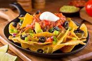

Nachos originated in the city of Piedras Negras, Coahuila, just over the border from Eagle Pass, Texas. Ignacio "Nacho" Anaya created nachos at the Victory Club in 1940 when Mamie Finan, a regular customer, asked if Anaya could bring her, and three other women on a shopping trip from Eagle Pass, a different snack than usual. In Spanish, "Nacho" is a common nickname for Ignacio. Anaya went to the kitchen and spotted freshly fried pieces of corn tortillas.
In a moment of culinary inspiration, Anaya cut the tortillas into triangles, fried them, added shredded Colby cheese, quickly heated them, added sliced pickled jalapeño peppers, and served them. After tasting the snack, Finan asked what it was called. Anaya responded, "Well, I guess we can just call them Nacho's Special." Nachos Anaya also opened his own restaurant, Nacho's Restaurant, in Piedras Negras. Anaya's original recipe was printed in the 1954 St. Anne's Cookbook. The popularity of the dish swiftly spread throughout Texas and the Southwest. The first known appearance of the word "nachos" in English dates to 1950, from the book A Taste of Texas According to El Cholo Spanish Cafe history, waitress Carmen Rocha is credited with making nachos in San Antonio, Texas, before introducing the dish to Los Angeles at the cafe in 1959.
A modified version of the dish, with cheese sauce and prepared tortilla chips, was marketed in 1976 by Frank Liberto, owner of Ricos Products, during Texas Rangers baseball games at Arlington Stadium in Arlington, Texas. This version became known as "ballpark nachos". During the September 4, 1978 Monday Night Football game between the Baltimore Colts and Dallas Cowboys, sportscaster Howard Cosell enjoyed the name "nachos," and made a point of mentioning the dish in his broadcasts over the following weeks, further popularizing it and introducing it to a whole new audience. Liberto died in 2017. Ignacio Anaya died in 1975. In his honor, a bronze plaque was erected in Piedras Negras, and October 21 was declared the International Day of the Nacho. Anaya's son, Ignacio Anaya, Jr., served as a judge at the annual nacho competition.
